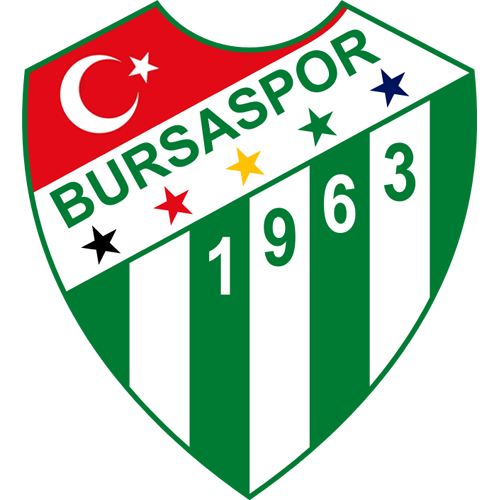
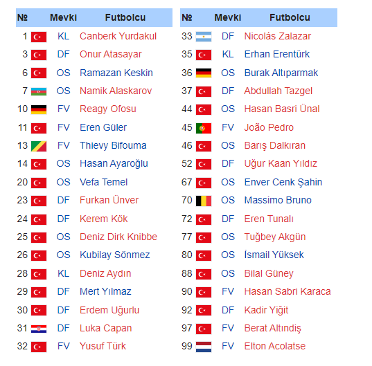
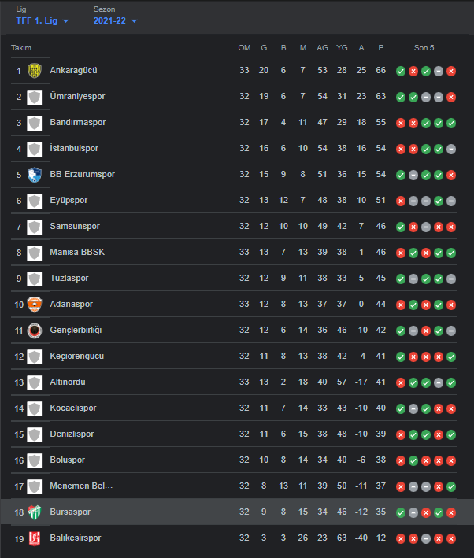
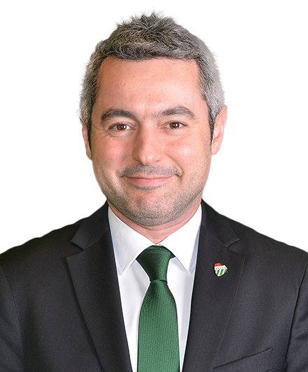
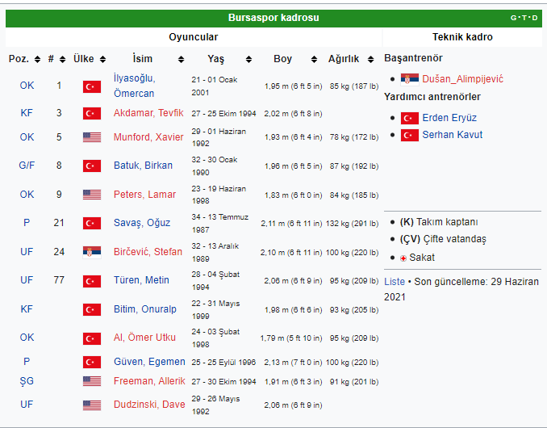

Bursaspor
Takımın Tarihçesi
Bursaspor Kulübü 1963 yılında Bursa'da kurulan spor kulübüdür. Daha çok futbol branşıyla tanınan spor kulübü, futbol branşının yanı sıra basketbol, masa tenisi, voleybol, yüzme, boks ve atletizm dallarında faaliyet göstermektedir. Kulübün renkleri yeşil beyazdır. Bursa'da faaliyet gösteren 5 amatör kulübün birleşmesinden doğdu. Akınspor, Acar İdman Yurdu, Demirspor, İstiklalspor ve Pınarspor takımları birleşerek Bursaspor'u oluşturdular. Kulüp, renklerini Uludağ'ın karından ve ovanın yeşilinden aldı. Bursaspor'un amblemindeki 5 yıldız, kurucu takımları temsil ediyor. Bursaspor futbol branşı ile tanınır. 50 sezon Süper Ligde mücadele eden takım 2009-10 sezonunda ise Süper Lig şampiyonu olarak Süper Ligde Şampiyon olan 5. takım olmuştur. 1 kez Türkiye Kupası 2 kez de Başbakanlık Kupasını kazanan takımın Avrupadaki en büyük başarısı ise Kupa Galipleri Kupasında çeyrek final oynaması ve Şampiyonlar Ligi gruplarında mücadele etmesidir.
 Takım ile alakalı güncel puan durumu:
Takımın şu anki başkanı:Ömer Furkan Baraz
Takımla İlgili Diğer Bilgiler
